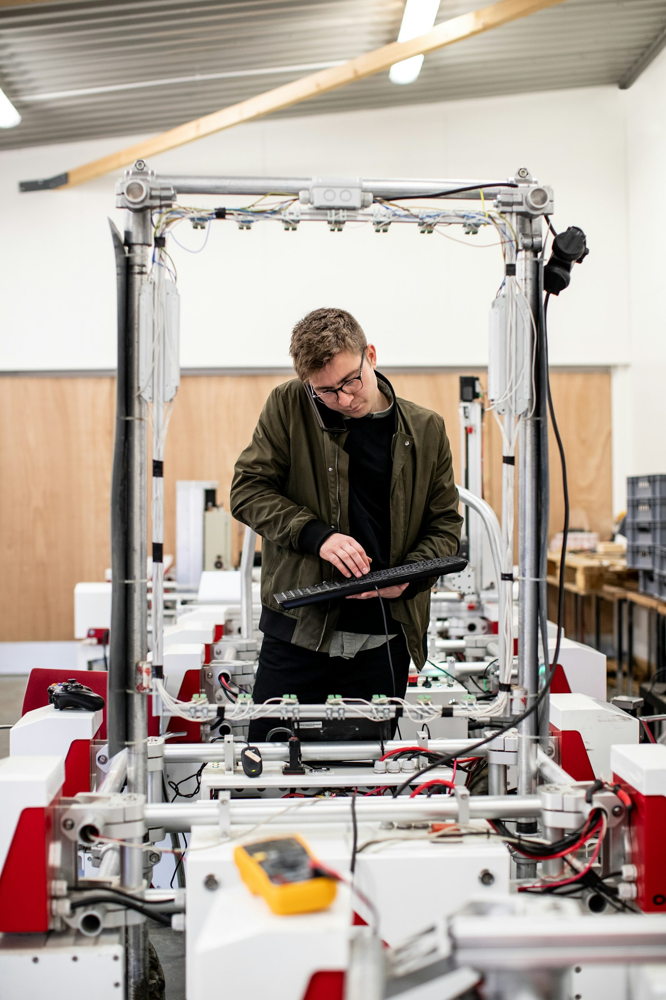

Case 01 — Substation automation
33/11 kV substation protection & SCADA upgrade

The problem
A distribution substation was still running on electromechanical relays older than its operators. Fault records were paper, clearance times were long, and two feeders tripped together whenever one faulted.
My role
I led the protection design and commissioning: relay selection and settings calculations, IEC 61850 SCADA integration, and the staged cutover that kept all four feeders live throughout the six-week programme.
The outcome
Fault clearance fell from 480 ms to 90 ms, simultaneous trips stopped entirely, and operators gained event records they could actually read. The substation has run eighteen months without a protection maloperation.
| Voltage | 33 / 11 kV |
|---|---|
| Feeders | 4 outgoing |
| Standard | IEC 61850, IEC 60255 |
| Clearance | 480 ms → 90 ms |
| Outage | None — staged cutover |